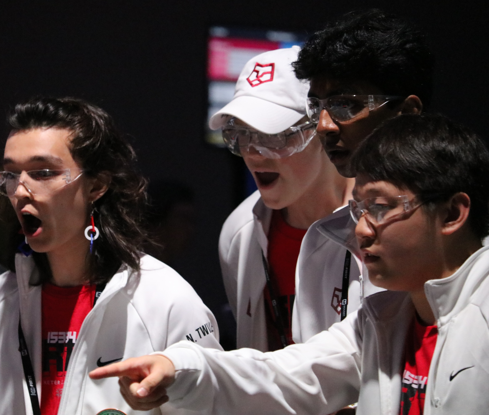

Hello, I'm
Owen
I'm a student at Phillips Exeter Academy interested in robotics, embedded systems, electronics, and software. I build all sorts of things, from competition robots and custom PCBs to compilers and websites.

btw i use
vim btw
Black boxes make for good side quests.
I spend my time building robots, embedded systems, electronics, and software. My projects have ranged from competition robots and custom firmware to developer tools and websites with fewer users than microservices.
Most of my work starts with the same question: how much of a system can I understand and build myself? That has pushed me to work "across the stack," from digital logic in Verilog, to I²C drivers and embedded firmware, to higher-level applications like a hobby social network. I like to follow systems all the way down, or at least to the point where it's a mechanical engineer's problem.
I want to work on hard technical problems where software, electronics, and the physical world all matter. I'm most excited by systems that are difficult to build but impactful.
worked on
my machine
Well, most of it did.
standard
i/o
If you made it this far, you might as well say hi.